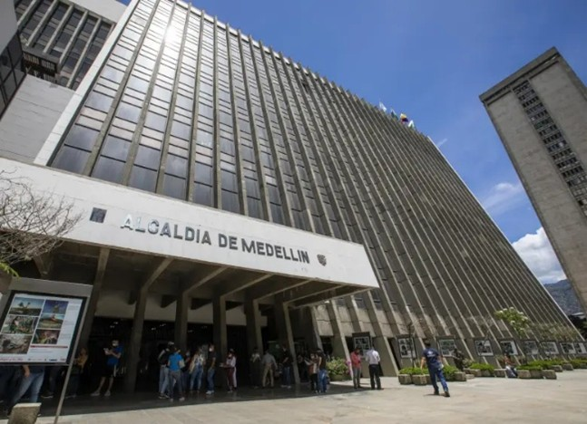
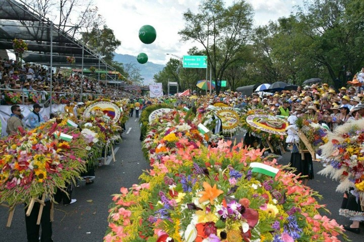

NOTICIAS MEDELLIN
Bienvenido al espacio informativo de Medellín, una ciudad reconocida por su innovación, transformación y dinamismo. Aquí encontrarás las noticias más relevantes sobre lo que sucede en la capital antioqueña, desde avances en tecnología y desarrollo urbano hasta temas de seguridad, economía, cultura y vida social. Nuestro objetivo es mantenerte informado con contenido actualizado, claro y confiable, destacando tanto los hechos del día a día como los procesos que están dando forma al futuro de Medellín. La ciudad evoluciona constantemente, y cada noticia refleja su energía y capacidad de cambio. Mantente conectado con Medellín y descubre todo lo que ocurre en una de las ciudades más influyentes y transformadoras de Colombia.
ACTUALIDAD: Debate por desiciones politicas

En Medellín se han generado discusiones recientes debido a decisiones tomadas por la administración local en temas culturales y políticos. Estas medidas han provocado reacciones diversas entre ciudadanos y líderes de opinión, abriendo espacios de debate sobre la gestión pública y la libertad de expresión. La situación continúa siendo tema central en la agenda de la ciudad.CULTURA :Su feria de las flores

La ciudad sigue consolidándose como un referente cultural gracias a su variada agenda de eventos. Actividades como exposiciones, conciertos y festivales reúnen a miles de personas, promoviendo el arte y la creatividad. Estas iniciativas contribuyen a fortalecer el tejido social y posicionan a Medellín como un destino atractivo para el turismo cultural.
DEPORTE :Entrenamiento deportivo

Los equipos deportivos de Medellín se encuentran en fase de preparación para enfrentar importantes competencias a nivel nacional. Entrenadores y jugadores trabajan intensamente para mejorar su rendimiento y alcanzar buenos resultados. La hinchada mantiene altas expectativas y continúa apoyando a sus equipos en cada encuentro.
ECONOMIA:Su grandioso metro

Medellín sigue siendo ejemplo en innovación urbana, especialmente en su sistema de transporte público. El metro y otros medios integrados continúan evolucionando para ofrecer un mejor servicio a los ciudadanos. Estos avances han permitido mejorar la movilidad y reducir tiempos de desplazamiento en la ciudad